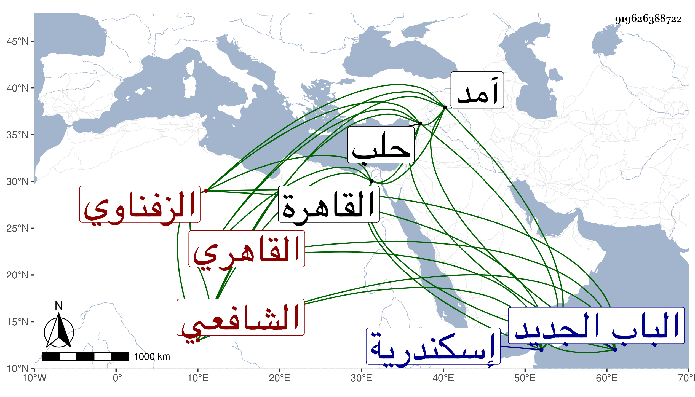

0902Sakhawi.DawLamic.ITO20230111-ara1.EIS1600.919626388722
Biography ID: 919626388722
302
محمد بن محمد بن عبد الله بن أحمد ناصر الدين أبو اليمن بن الشمس أبي عبد الله بن الجمال بن الشهاب الزفناوي الأصل القاهري الشافعي الماضي أبوه وابنه أحمد . ولد فيما قرأته بخط ولده في سنة خمس وثمانين وسبعمائة بالقاهرة ونشأ بها فحفظ القرآن والعمدة والتنبيه والمنهاج الأصلي وألفية ابن ملك وعرض في سنة ثمانمائة فما بعدها على ابن الملقن والأبناسي والشمس بن المكين المالكي ومحمد ابن أحمد السعودي الحنفي وأجازوه في آخرين ممن لم يجز كالبلقيني والصدر المناوي وسمع على المجد إسماعيل الحنفي والتاج بن الفصيح والحافظين العراقي والهيثمي والقاضي ناصر الدين نصر الله الحنبلي وأجاز له عائشة ابنة ابن عبد الهادي وآخرون ، واشتغل في الفقه على الشمس والمجد البرماويين والولي العراقي والعز عبد العزيز البلقيني والشرف السبكي والشمس الحسباني والفخر البرماوي ولازمه جدا ولكنه لم ينجب وناب في القضاء عن الجلال البلقيني فمن بعده وتميز في صناعته وتصدى لذلك وكان سمحا فيها وجيها ، وجلس بالقبة الصالحية في أيام شيخنا وقتا وأضيف إليه عدة بلاد بل ولي قضاء إسكندرية مرة عوضا عن الجمال بن الدماميني وأم بتمرباي رأس نوبة النوب وقبله بالبدري المشير بالديار المصرية ، وحج مرارا وسافر إلى حلب في سنة آمد صحبة شيخنا وحضر أماليه بها وغير ذلك بل وسمع علي البرهان الحلبي أيضا وحدث سمع منه الفضلاء قرأت عليه أشياء وكذا قرأ عليه البقاعي السنن الكبرى للنسائي وقدمه على السيد النسابة بعد أن كان يطلق لسانه فيه ويصفه بكل قبيح حتى أنه صنف فيه أشلاء الباز على ابن الخباز . مات في ليلة الجمعة تاسع جمادى الأولى سنة ست وسبعين بعد أن طال تعلله بالإسهال وغيره وقاسى شدة عسى يكفر عنه بسببها وصلى عليه من الغد بعد الجمعة بالأزهر ودفن بتربة أزلان خارج الباب الجديد عفا الله عنه ورحمه وإيانا .
